Исправление замечаний к тесту6. Главная найденная причина тёмных прямоугольников сверху: вырезка ниш шасси удаляла верхнюю обшивку крыла. Восстановлены336граней исходной поверхности с прежней окраской. Нижние отверстия ниш сохранены.
Основные створки разделены: часть закрывается после прохода колеса, короткая секция возле крепления стойки остаётся открытой. Убраны добавленные видимые круглые вставки в воздухозаборниках, каналы одинаковые.1300непрозрачных граней заполнения фонаря заменены прозрачными с сохранением кривизны и нижней обвязки. Неподвижный задний участок тормоза отделён от поднимаемой панели; длина подвижной части2,455м. Подвижные поверхности дополнены обратными гранями. Сглаживание выключено, остальные самолёты/движок сохранены.
Проверены полные игровые циклыG/Alt+5/B и выбранные пары шасси в9положениях. Это не подтверждение отсутствия всех дефектов или заводской точности. Фото и геометрия сопоставлялись визуально с пользовательскими снимками и дополнительными фото Су30СМ. Чужие фотографии не включены; ссылки в references.json. Проверки.
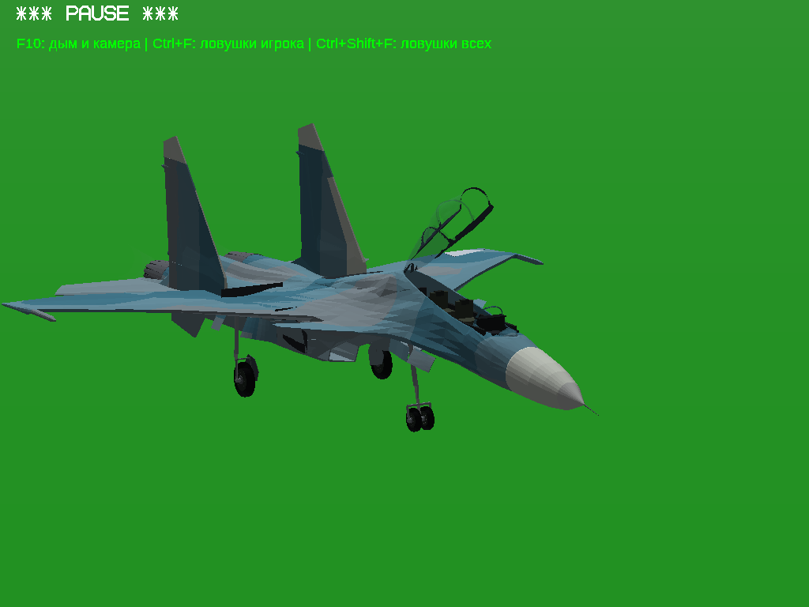
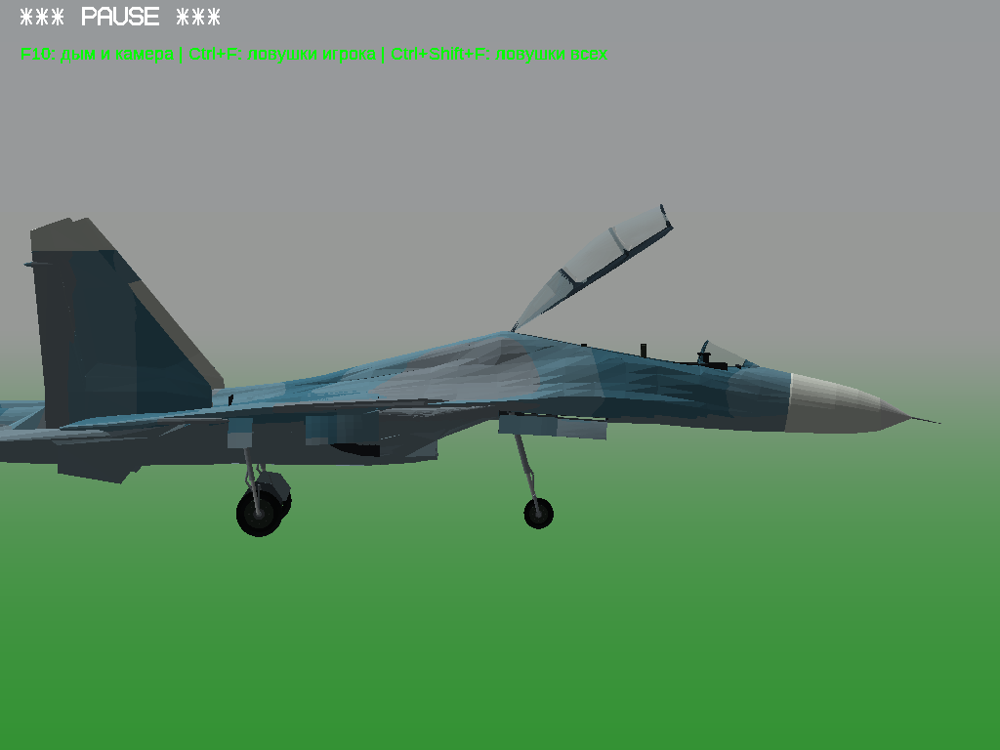
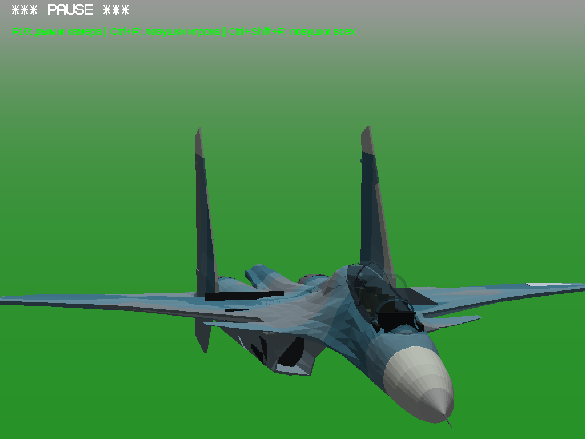
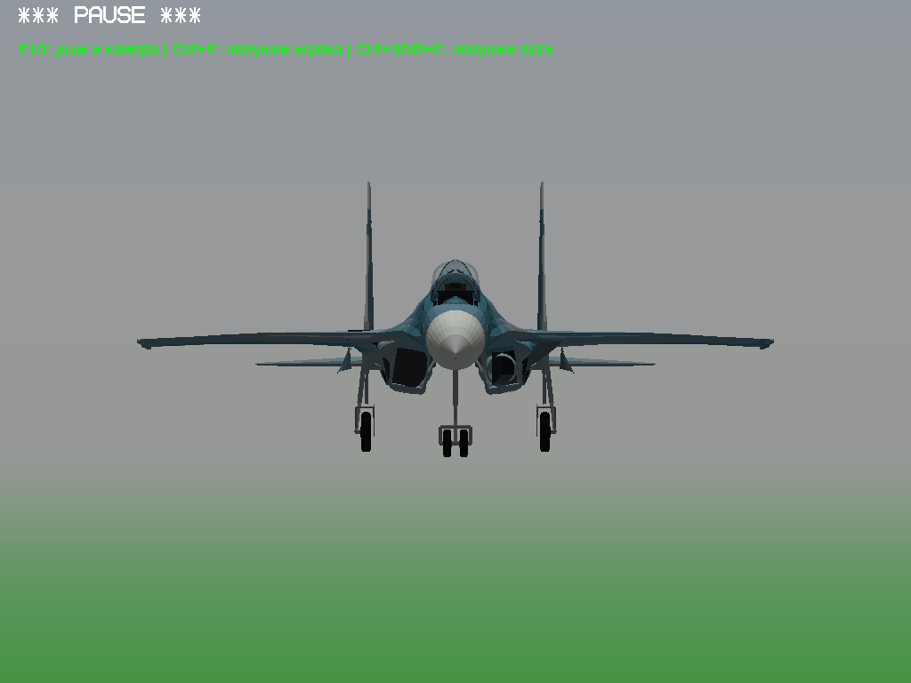
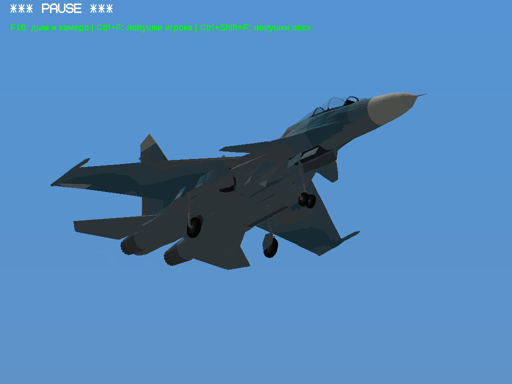
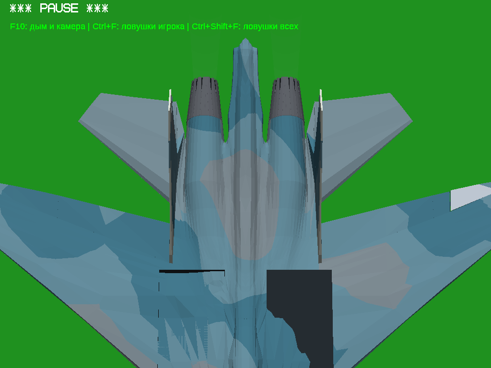
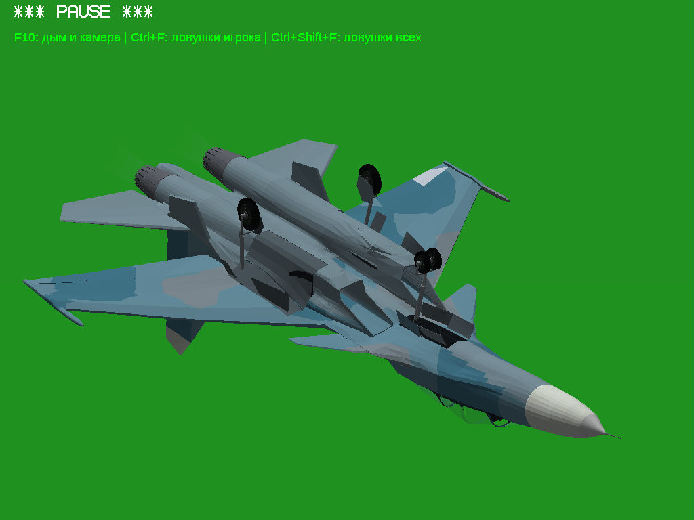
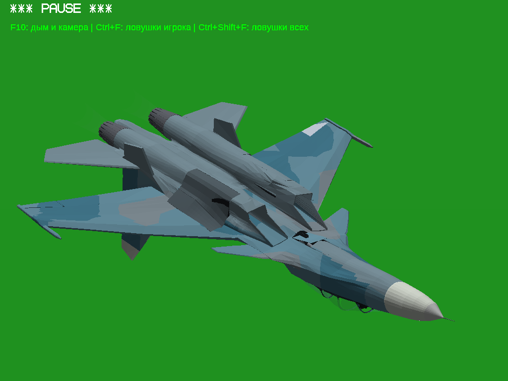
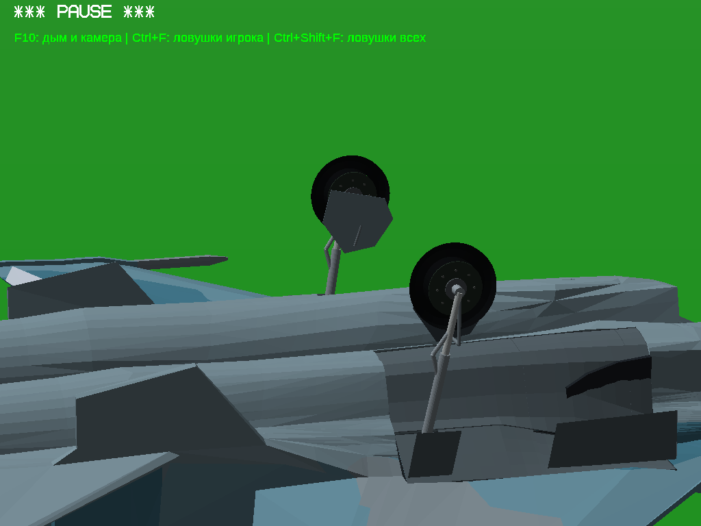
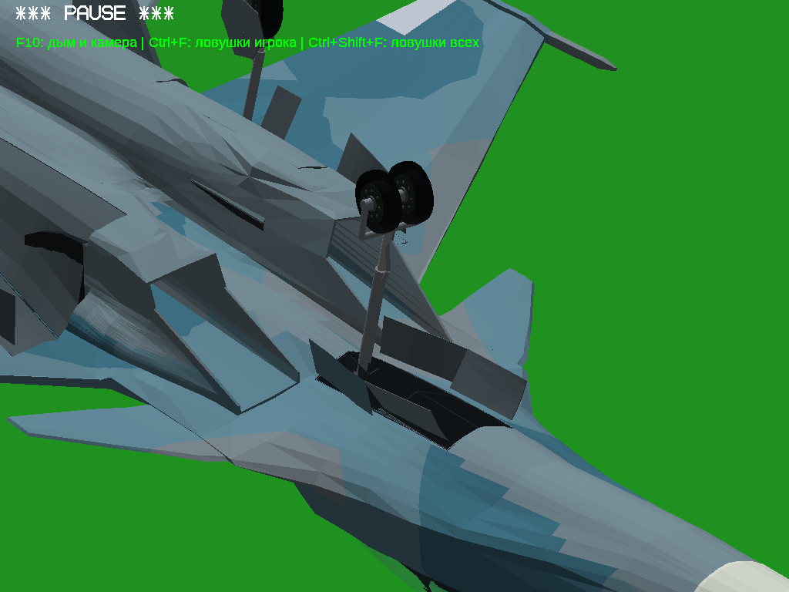
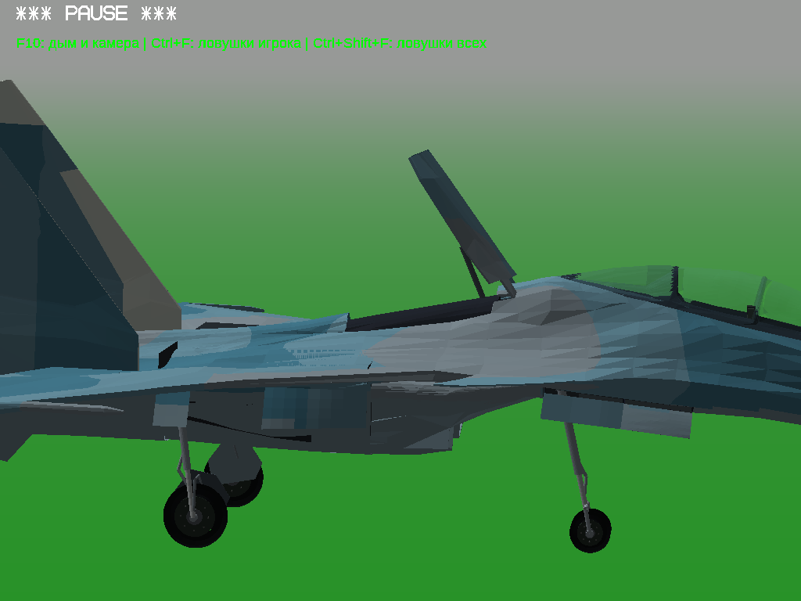
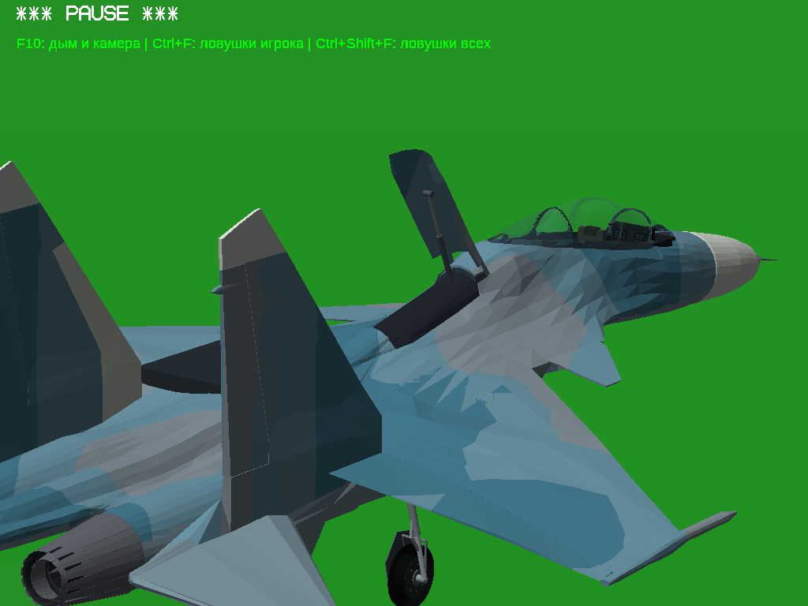